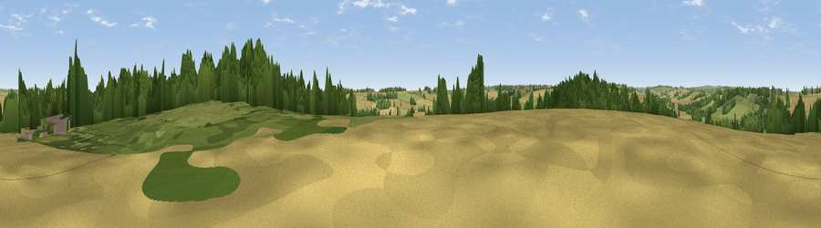

Viewpoint near Wing
#40117 in England · top 71% of its area beats it · near Wing · access?Where it is
The exact computed spot (SK 88325 02825). Click the marker for map links.
Public access: no public right of way or access land is recorded at this exact spot — it may be on private land. Computed from Natural England's CRoW access layer and OpenStreetMap rights of way — not the legal definitive map. Always verify locally.
The view, rendered

A 360° render of this exact spot computed from the terrain model, tree cover and land cover — summer colours, afternoon light, calibrated against photographs of famous viewpoints. Real trees, hedges and buildings will differ in detail.
The panorama
Grey silhouette: terrain skyline in each direction (720 bearings, Earth curvature and refraction included). Dashed green: skyline with trees (+15 m) and buildings (+8 m) as obstacles. Blue strip: how far the ground is visible on each bearing.
Where the view opens
Wedge length = distance to the farthest visible ground on that bearing (vegetation-aware). Rings at 10, 25 and 50 km.
What fills the view
42% cropland · 42% grassland · 15% woodland ·
Angular shares of the visible panorama (visual magnitude), not map area. Landscape diversity 0.46 (0–1 Shannon).
Key numbers
More beautiful places nearby
The staircase of upgrades: each row has a higher view potential than everything closer. Driving times are estimates from straight-line distance, calibrated against real road routing — check an actual route before setting out.
| Place | Direction | Drive | Score |
|---|---|---|---|
| Viewpoint near Brooke | NW · 3 km | ~7 min | 26.9 |
| Viewpoint near Glaston | SE · 3 km | ~8 min | 30.4 |
| Lax Hill | N · 3 km | ~8 min | 30.8 |
| Viewpoint near Egleton | NNW · 4 km | ~10 min | 38.7 |
| Viewpoint near Belton-in-Rutland | W · 6 km | ~12 min | 43.4 |
| Viewpoint near Stoke Dry | SSW · 7 km | ~14 min | 47.5 |
| Viewpoint near East Norton | WSW · 11 km | ~21 min | 49.6 |
| Robin-a-Tiptoe Hill | W · 11 km | ~21 min | 54.1 |
52.61602, -0.69687 · source: screening · position refined by local search. Computed location — check access rights before visiting.